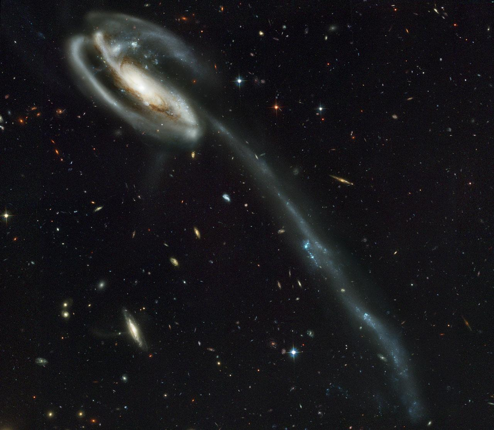
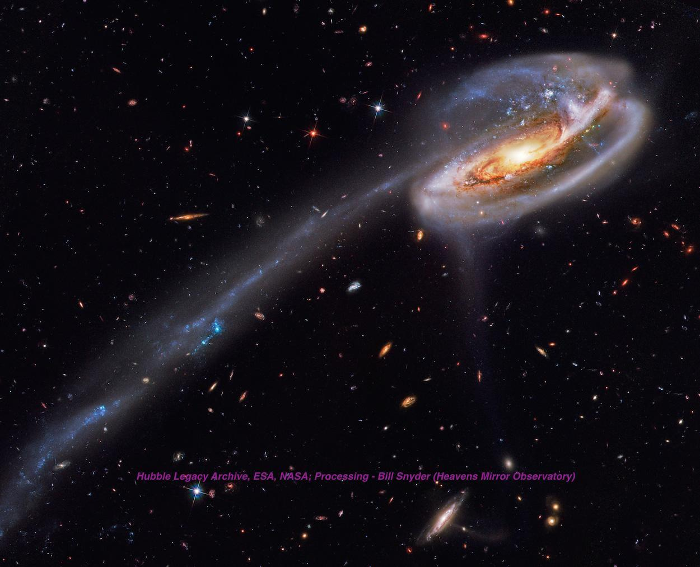

The Tadpole Galaxy, UGC 10214
- Name: Tadpole Galaxy
- RA: 16h 06m 03.9s
- Dec: +55° 25' 32"
- Type: SB(s)c pec
- Size: 3.6’ x 0.8’
- Mag: 13.7V, 14.4B
This remarkable disrupted spiral with an immense tidal tail was made famous by an iconic HST image back in 2002

But it was imaged by Zwicky using the Palomar 200-inch back in the mid-50's and featured in his seminal 1956 paper "Multiple Galaxies". He commented "The system shown on Plate IX obviously has suffered some encounter with other galaxies which, however, cannot be located with certainty at the present time." That's probably still true today, though it has been suggested it is a very blue, compact galaxy behind the Tadpole but shining through the distorted spiral arms.
Russian astronomer Boris Vorontsov-Velyaminov first catalogued this galaxy in 1959 (VV 29). He referred to it as "Zwicky's System", but I've never seen that nickname used elsewhere. Halton Arp included it in his 1966 "Atlas of Peculiar Galaxies" (Arp 188) and commented in his notes section, "Disturbance inside western arm, filament may originate there"
The redshift-based distance of the Tadpole is ~425 million light-years and this implies the tidal tail stretches across 280,000 light-years! This dramatic processed image reveals several blue splotches of starburst activity in the tail. The background galaxies provide an amazing canvas.

My first views of this galaxy were in 2002 and 2004 with my 18-inch. It was not a difficult catch at V = 13.7, but the tidal tail was not seen. I also picked up three nearby galaxies -- make sure not to confuse these with UGC 10214!
Fairly faint, elongated 2:1 WSW-ENE, ~1.0'x0.5'. The galaxy seemed brighter on the ENE end. Located 7.5' W of mag 8.4 SAO 29805. MCG +09-26-054 lies 4.3' SW, MCG +09-26-050 9.4' SSW and MCG +09-26-052 12' NNW.
My one extreme scope view was through Jimi's 48-inch and it was a stunner --
At 488x, the "Tadpole Galaxy" appeared fairly bright, elongated 2:1 E-W, ~1.2'x0.7'. It contains a bright, elongated core (bar) and nucleus. The tidal plume was visible as a fairly thin, low surface brightness tail, extending east from the main body. It was faint, but clearly visible with averted vision angling east-northeast and doubling the overall length to ~2.5'. There was an extremely faint knot at the east tip. The portion of the plume further east was not seen with confidence.
The closest companion is 2MASX J16054969+5526164 = PGC 2502068, a small V = 16.2 galaxy that lies 2.1' WNW. This was noted as "faint, very small, elongated N-S, 12"x6".
Lots of challenges here! What aperture will reveal the Tadpole galaxy? What about the structure in the galaxy? Can you glimpse the tidal tail? How many of the nearby companions?
"GIVE IT A GO AND LET US KNOW"